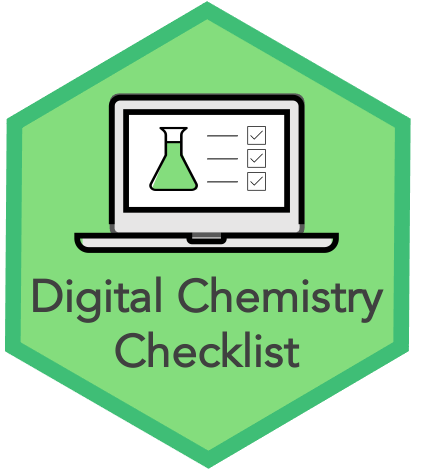

Launch of the Digital Chemistry Checklist: how to prepare for the future of Digital Chemistry¶
{kind=link}
Introduction¶
There is a growing appetite for Digital Chemistry. The Royal Society of Chemistry recently outlined their call to action for a Digital Future in Chemistry[1], focusing on automating more chemical synthesis using robotics, and mining these high-throughput data sets using Artificial Intelligence (AI) and Machine Learning (ML). Meanwhile, IBM have released RoboRXN[2], which uses AI to choose reagents and protocols to produce chemicals with desirable properties.
In contrast to RoboRXN, most robots for chemical synthesis are controlled by chemists (rather than AI), but are used to automate the time-consuming practical aspects of chemical synthesis: grinding, heating, shaking, etc. They can theoretically carry out 1000 times more experiments than their human lab-mates[3], creating more chemicals in both volume and variety. It’s the data associated with these high-throughput experiments that can then form the input to AI algorithms, to aid in chemical synthesis, drug discovery, and meta-research.
The installation of laboratory robots is only half the battle. ML algorithms require specific kinds of data to be feasible, and such data sets do not appear by accident. The amount of data-cleaning and preparation required to make existing datasets suitable for AI and machine-learning tasks is something of a meme among data scientists. Bespoke AI data sets can be very costly to produce[4], for unsupervised as well as supervised learning. So much so that there is a real lack of suitable datasets: many agree that the field of data science is constrained by the lack of the right kinds of data.
This is why it’s important that we act quickly to begin capturing information in a useful format, in order to leverage them to make the most of the new possibilities in Digital Chemistry. This is particularly important, since Chemical synthesis robots are not cheap. With that in mind, this article aims to walk through the considerations for a research group who hope to get prepared for this new interface between Data Science and Chemistry.
We provide both some use cases which might inspire a change, an overview of the different data types that may be of interest, and a collection of checklists within a three stage road map to support in planning. These materials serve as a starting point for developing a community of knowledge for Digital Chemistry labs, we welcome your suggestions to expand these materials, through our GitHub repository.
The starting point¶
To help us understand what kinds of data exist, let us begin by imagining a scenario where we have installed our new robotic friend and we have connected them to a computer which controls their movement with our computational instructions. Let’s also assume that this same machine also collects any output data provided by the robot.
Inputs and outputs¶
Now we can consider the different types of data that are related, and how and if they would be collected by default. At this stage, even for a single user with one run of the robot, we are likely to have a few different types of inputs and outputs that we might be interested in:
Input chemicals: the chemicals themselves and information about their provenance
Robot instructions: the input instructions to the machine
Lab environment: e.g. temperature in the lab, chemist operating the machine, etc.
Context: the purpose of this set of experiments in the context of a larger pipeline of research.
Machine run log: what actually happened during the experiments
Output chemicals: those synthesised by the robot.
Let’s first assume a worst-case scenario for each of these sources of data as our starting point.
1. Input Chemicals¶
We can assume that labs will have a Chemical Inventory System (CIS) of some form. This this will contain records of their chemicals, including name of the chemical, supplier, date acquired, hazard information and expiry date as a minimum. In the worst case scenario, it may be kept on paper. And if it is available in a computational format, then this information might be restricted to a small number of people such as the lab manager.
If the chemicals can be input to the robot in different ways, for example in a different order, or in different slots or locations, then this information may not be recorded, or may be recorded in a lab book by the chemist operating the robot.
2. Robot instructions¶
In some way, the chemical synthesis robot must be told what to do. These instructions might created by users through interacting with buttons and menus using a Graphical User Interface, or written directly into a file. We will assume that this results in a file of some kind that the robot uses to carry out the experiment. This file may have a proprietary format, which may mean that the instructions are only readable to the specific robot’s software, rather than being readable for other computer programs or to humans without access to the robot’s specific software.
3. Lab environment¶
Some lab environment data may be collected by the robot, if it has inbuilt sensors. Otherwise, it’s likely that this information is lost, or collected in a lab book, which may not be digital.
4. Context¶
By default, it’s likely that information about the context of the experiment (where this run of the experiment fits into a larger experimental design for example) is collected in a lab book (which may not be digital). If users submit jobs to the robot, then it may not be the lab book of the person who is running the experiment (perhaps a technician). The experiment owner might not know who is operating the machine and vice versa.
5. Machine run log¶
At a minimum the robot will output some information about what time it ran, what it did, and whether it’s attempts were successful (i.e. the robot did not need to stop for some reason). More sophisticated technology might include information about the machine environment, e.g. if you told it to heat up a chemical to X degrees, what temperature did it actually reach inside the machine?
Similarly to (2), this information may be in a proprietary format.
6. Output chemicals¶
Chemical synthesis robots create physical chemicals. These could come out of the machine in different locations or at different times, which may not be recorded by default. They could be labelled as a batch or individually by the user, and there may not be a set naming convention.
After leaving the machine, they are likely to undergo downstream analysis (e.g. NMR), which will be different depending on the lab and it’s facilities. These machines may have existing data storage mechanisms that may not yet mesh with one another, or be stored in the same place.
The starting point: summary¶
We’ve looked at several data types that will exist in any chemical synthesis scenario, and how they might be stored “by default”. In a worst case scenario, these different data sources may:
Not exist in a digital format
Contain errors (e.g. typos) due to being written into spreadsheets or databases by hand without data validation.
Be stored somewhere that will no longer be available in the future (for example when staff leave the group).
Exist in a proprietary format that it is difficult to extract data from for use in other analyses
Be disconnected from one another (and other possible sources of data linkage) and may not have contain identifiers which allow it to be connected easily.
The end goal¶
Now let’s look at what a best case scenario might look like, and then: how we can get there.
Ideally, the process of setting up and running the chemical synthesis robot should result in a well-linked, searchable, database with minimal manual effort. The database should include information from all six sources of data mentioned above. As well as all of the data created inside the lab, the database could also link to knowledge created outside of it, for example the literature, or national databases of interest.
The process of creating this database should be as easy as possible, automating things that can be automated, in order to both reduce the burden on individuals as much as possible (and thereby increasing compliance), and to reduce opportunities for errors. For example, we might imagine:
Persistent digital identifiers for chemicals, people, and equipment, helping us to link to other equipment in the lab
Technicians set up new users in the system, ensuring that they have a unique identifiers (e.g. ORCid), and that the data they create is stored securely and safely, and is readable for them, and for the larger database.
Users scan labels on input chemicals, to automatically add information about their provenance, including information like batch, which might unveil reproducibility issues
Users are prompted to link experiments to digital lab books
Input formats are automatically checked for errors and missing inputs in real time
Data is automatically backed up
Once created, the data created might be kept “in-house”, or it might be available to researchers freely, or selectively, through a data access committee. Depending on the audience, users may wish to query the database locally, to search it using a web front end, or through an API. Some parts of the data might be submitted to a national database, where the data might undergo stricter curation and harmonisation with other national datasets.
Use-cases¶
Here we provide some example use-cases that show how connecting this data could support Chemistry research.
1. Reproducibility¶
Chemistry is not immune to the scientific “reproducibility crisis”[5]. One contributing reason for this is that poor-quality reagants can lead to problems in research. For example, unreliable probes have led to thousands of papers with uninterpretable results, including a failed clinical trial for breast cancer that involved more than 500 people[6]. By automatically keeping track of chemical batches, chemists can more easily gain from (and contribute to) reproducibility efforts, e.g. efforts to record poor quality chemicals.
2. More efficient research for synthetic chemists¶
Not all reactions end up in the published literature, and negative reactions are often missing. This leads to researchers running experiments that have been run before and have failed. The creation of a searchable database of products, intended products or reagents from Chemspeed data would alter this. A researcher would first search for their proposed reaction, reagents and products and find previously run reactions. If the reaction has been run before and failed, the researcher could try another route instead, thus saving on wasted chemicals and research time. Or, if the reaction worked, but not all that well, it could give information about how to improve the approach (for example, should a different solvent or temperature be tried?). If the reaction was associated with a user, the researcher could even contact that researcher to gain ‘knowhow’ in how best to run these types of reactions.
3. Mapping areas of chemical and reaction space (chemoinformatics and data science)¶
The number of synthetically accessible chemicals is vast (over 10^60 for molecules expected to be pharmacologically active), and that of reactions to create them even larger. Using ChemSpeed database can allow scientists to collect together maps of chemical/reaction space. Some examples of the datasets (maps) that could be gathered:
a collection of which chemicals/reactions have been tried to highlight which areas of chemical/reaction space are undergoing active research and what areas have not been explored,
a collection of chemicals synthesized/reactions tried and the sucess/results of the reaction
datasets focussed on uses of a specific chemical or technique (e.g. ‘all reactions in DMF’, ‘all reactions involved SNAr reactions with product MW under 70’ etc) The automatic inclusion of negative and less good (i.e. not publishable in high end journals) reactions which the ChemSpeed captures increases the quality of these datasets.
4. Doing machine learning (ML) or using artificial intelligence (AI) techniques (machine learning and data science)¶
Using the datasets generated above (user case 3) chemists will be able to do ML and AI on the data. Some examples:
Applying simpler ML techniques (like principal compoent analysis, regression models, clustering algorithms etc) on smaller, specific datasets (like ‘all reactions to make product x using varied catalysts’, ‘all 10-carbon ring based molecules and their solubility’ etc) to give descriptions of that area of chemical space. These descriptions can highlight trends which would allow for predictions, for example of better catalysts ore more soluble products in the examples mentioned here.
Creation of large datasets covering large areas of chemical space would allow for more complex ML/AI algorithms to be applied to understand vast areas of chemical space and reactivity. These sort of tasks will lead to both improved ML algorithms for chemistry and large break-throughs in chemistry understanding. These approaches will make it easier to design molecules or materials for a task and reaction routes to try.
5. Statistical data discovery (statistics, chemoinformatics, data science)¶
Design of experiments is a widely used technique where a large number of similar reactions ideally in parallel to infer information about processes, or optimise for yieild, variability or resilience etc. This sort of approach is commonly used with automated synthesis. However, statistics can be applied to previously run data to look for underlying structure in the data which will give information about underlying chemistry. These are the sorts of trends that are hard for human scientists to see in the data without large datasets and statistical techniques. This might sound similar to user case 4, however ML is concerned with learning models from data and that can then be used predict and design, statistics is concerned with describing what is in the data.
6. Optimisiation of reactions (synthetic and industrial chemistry)¶
Using the datasets that cover specific areas of chemical/reaction space (as outlined in user case 3), chemists and chemical engineers can explore that region to get an idea of what to do to try to optimise a specific reaction. This would likely then lead to better designed DoE (than they would get starting without this mined information), greatly increasing the efficiency and sucess of optimisation.
Road map¶
In order to prepare for a Digital Chemistry future, we need to not only invest in technology, but also in the development of processes and training materials. Luckily, we do not need to reach our ideal “end goal” to leverage any benefit. We’ve broken up the process into three stages. For each stage, we have created a checklist. You can contribute to these materials through our GitHub repository. We welcome suggestions for making these more effective, to reduce the burden on those setting up an effective Digital Chemistry lab.
Stage 1: Capture¶
The purpose of this stage is to prevent data being collected presently from being lost in the future. We may not be able to easily sort or use it all at this stage, but the important thing is that it is not lost. In this stage, there is also planning for the future: thinking about what data we would need to begin collecting to enable us to link data sets to one another. Both those that we already store, and any outside data sets that may be of interest.
At the end of this stage, all of the data that we are currently collecting should be:
be backed up regularly
be automatically stored in a place that is not tied to individual staff members after each experiment run (i.e. in one or more databases, or securely stored files)
stored with sensible naming conventions, and persistent identifiers (making use of existing identifiers where possible).
However, the database may for example:
contain proprietary files where the underlying data cannot be easily extracted at the present time.
contain identifiers that allow linkage to other data sources (e.g. chemical inventory systems)
Here we provide a checklist of questions to ask your team, which is designed to provoke thought about this first stage. Stage 1 can be returned to many times: when thinking about new data sets to include, or more ways of streamlining the data collection process.
Stage 1 Checklist
Team: who are the stakeholders in your digital chemistry team? Have you identified who is or will be:
Leading the Digital Chemistry project?
Using the chemical synthesis robot? Undergraduate/Masters/PhD students? Post-docs?
Using the data captured by this process?
Creating process documents?
Aministrating the machines (computers) that control the robot? And any network it may be a part of?
Writing and maintaining software?
This may be different people for linking different existing systems and data sets.
Designing, creating, and maintaining the database?
Process: how will you create clear and effective process for using the machine for both users, technicians, and (potentially) IT services teams who administrate the machines?
Do you have process documents, and do they explain:
How to get access to the machine
How to set up a new user
How to set up, or schedule, a run of the machine
Are process documents accessible to users? (e.g. online, easy to find, well-written, concise)
Is it necessary to provide training, who will provide this, and how often (e.g. at induction, annual)?
(How) will you check if processes are followed? Who’s responsibility is it to check?
What are your mechanisms for improving processes, e.g. finding out how easy is for users to follow the process, and what parts need changing? Who’s repsonsibility is this?
Machine set up: is your machine both secure from outside attacks, and accessible for users?
Which IT network will this computer sit on, and who is in charge of this network?
Do we need to update our operating system in order to access the network? (And therefore, do we need to update any robot-related software?)
Is it necessary for us to use a quarantine or gateway machine to keep this machine isolated from the rest of the network?
Who administrates this machine or network?
Who creates user accounts?
Who gives these users access to the machine?
Who installs any necessary software? Do users have rights to do this?
Database: how will the database be created and maintained?
Who will design and create the database?
Who will have access to add things to the database? Or to change user access?
As a minimum, what will be stored in the database? Where does this information come from?
Input data
CAS ID
Use by date?
Robot instruction files
Lab environment data
Research context data
PI ORCID
Grant number
Project name
Machine run log
Output chemicals
Labels
Linked downstream analysis
How will data be inputted to the database?
Can we link existing data sets (e.g. Chemistry Inventory Systems, analysis databases such as NMR)?
If choosing a new systems (e.g. CIS, robots), which software will allow us to do this easily?
Who will write sripts to link data to the database?
Are there any additional databases that we would want to link to now or in the future? What identifiers do they use? What do we need to store to link those data?
On data ingress, can we automate checks to ensure that data is in the correct format, to ensure that it will be possible to link it later (e.g. that downstream analysis and robot instruction files share an experiment ID as part of their name, or to prevent typos for example)?
Where will the database be stored?
Who will maintain the database and any software needed to populate it? How long can we commit someone to do this for?
How often will the data be backed up and where will it be backed up to?
Stage 2: Curation¶
The purpose of this stage is to extract all the information that we might want to use and put it all in one place, such that a skilled person could query it.
So, this involves extracting data from all needed files, and creating pipelines that link data from other existing sources. In both of these situations we will want to check for any sources of error automatically.
Stage 2 Checklist
Accessing proprietary data: How will we extract data from existing proprietary files?
Who will create any software to extract this information? Who will maintain it?
As well as running it on previously captured data, can we merge this into our data capture pipeline going forwards?
Does this require additional software purchases (e.g. of an API), or of software that changes proprietary files into flat format.
How will we test this software? How will we ensure the quality of the data that is being extracted?
Can this software be useful for other groups? How will it be licensed? Will it be released as a paper?
Storing newly accessed data: Once we have all the data that we might want (e.g. temperatures, positions on shaking tables, pressure, etc), how much of this can we store, and how?
Who will redesign and maintain the database?
Do we have an data science project that we can start at this stage (will this help us to choose data of interest to extract?)
Stage 3: Access¶
The purpose of this stage is to make the data accessible to those that need to use it. Depending in the commercial sensitivity or other privacy concerns surrounding the data, this may mean:
Setting up a data access committee, who approves certain uses of the data and exports part of the local database as data sets for researchers.
Developing a web front-end, or API allowing researchers to search the database directly.
Submitting interesting data to an (inter)national database for experimental chemistry results.
This section focusing on making your data FAIR: Findable, Accessible, Interoperable, and Reusable, helping yo (and others) to get the most out of it.
Stage 3 Checklist
Licensing:
Interface:
Website
API
Packages in R/Python
Tutorials, training, and support
Interoperability:
Authorisation:
Conclusion¶
There are steps that you can take now to start capturing your data in a format that can be usable later.
- 1
Royal Society of Chemistry. Digital futures. June 2020. URL: https://www.rsc.org/new-perspectives/discovery/digital-futures.
- 2
Philippe Schwaller, Théophile Gaudin, Dávid Lányi, Costas Bekas, and Teodoro Laino. “found in translation”: predicting outcomes of complex organic chemistry reactions using neural sequence-to-sequence models. Chem. Sci., 9(28):6091–6098, 2018. URL: https://pubs.rsc.org/lv/content/articlehtml/2018/sc/c8sc02339e.
- 3
Benjamin Burger, Phillip M Maffettone, Vladimir V Gusev, Catherine M Aitchison, Yang Bai, Xiaoyan Wang, Xiaobo Li, Ben M Alston, Buyi Li, Rob Clowes, Nicola Rankin, Brandon Harris, Reiner Sebastian Sprick, and Andrew I Cooper. A mobile robotic chemist. Nature, 583(7815):237–241, July 2020. URL: http://dx.doi.org/10.1038/s41586-020-2442-2.
- 4
G M Weiss and F Provost. Learning when training data are costly: the effect of class distribution on tree induction. J. Artif. Intell. Res., 19:315–354, October 2003. URL: https://www.jair.org/index.php/jair/article/view/10346.
- 5
Dalmeet S Chawla. Taking on chemistry’s reproducibility problem. Chemistry World, 2017.
- 6
Monya Baker and Nature magazine. Chemists start web site fingering substances that ruin experiments. Scientific American, July 2015. URL: https://www.scientificamerican.com/article/chemists-start-web-site-fingering-substances-that-ruin-experiments/.
- 7
Monya Baker. 1,500 scientists lift the lid on reproducibility. http://www.nature.com/news/1-500-scientists-lift-the-lid-on-reproducibility-1.19970, May 2016. Accessed: 2021-2-5. URL: http://www.nature.com/news/1-500-scientists-lift-the-lid-on-reproducibility-1.19970.